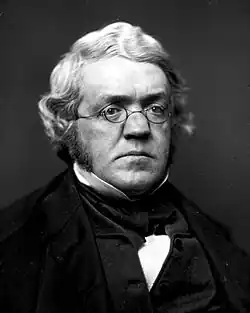
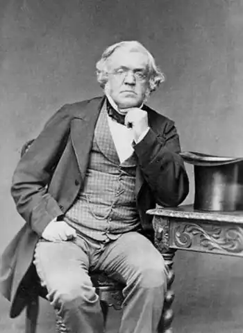
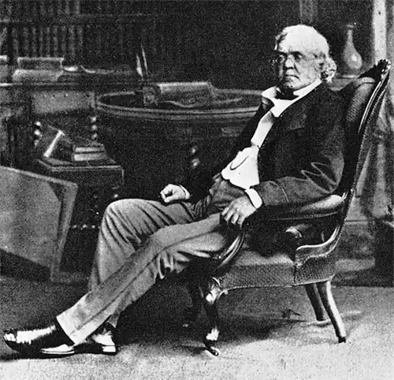

ТЕККЕРЕЙ, Вільям Мейкпіс (Thackeray, William Makepeace — 18.07.1811, Калькутта — 24.12.1863, Лондон) — англійський письменник.Народився в Індії, у родині значного колоніального чиновника. Батько невдовзі помер, а Теккерея відправили в Англію на навчання. Ще будучи учнем, Теккерей захопився малюванням, довго мріяв про кар'єру живописця, про що свідчить автобіографічний образ Клайва з роману "Ньюкоми". Навчався у Кембриджському університеті, де зацікавився філософськими поглядами М. Монтеня та Д. Юма, стежив за політикою. Ілюстрував комічними малюнками книги античних класиків, почав створювати віршовані та прозові пародії на своїх сучасників. Розчарувавшись у навчанні, Теккерей покинув університет і в 1830 р. вирушив за кордон, де вів життя вільного художника, процвиндривши у картярських баталіях значну частину статків, залишених йому батьком. А в 1834 р. зазнав краху індійський банк, у який було вкладено решта батькових грошей. Теккерей змушений був заробляти на прожиток — ці події також зображені у "Ньюкомах". Проте до цього, у 1830— 1831 pp., майбутній сатирик безтурботно прожив кілька місяців у Веймарі, де навіть сподобився побувати вдома у великого Й.В. Ґете. У 1833—1835 pp. він активно працював у газетах "Нешнл стендард" і "Конститьюшнл", видавцем яких був його вітчим Кармайкл-Сміт.
У 1836 р. вийшла перша книга — буклет "Флора і Зефір", збірник комічних малюнків з підписами, у яких пародіювалися штампи тодішнього балету. Тоді ж автор запропонував Ч. Діккенсу проілюструвати його "Записки Піквікського клубу", але отримав відкоша. Це спонукало Теккерея до рішення відмовитися від кар'єри художника-графіка. З кінця 30-х pp. він почав співпрацювати з численними журналами та газетами, серед яких варто вирізнити видання "Фрезер", "Морнінґ Кронікл" і "Панч". Значною мірою саме завдяки талановитим гуморескам Теккерея "Панч", починаючи з 40-х pp., став відомим у багатьох країнах комічним журналом.
Проте письменницька слава Теккерея аж до кінця 40-х pp. була не надто гучною. Він виступав під псевдонімами Майкл Анджело Тітмарш, Айкі Соломонз, Жовтоплюш, Огрядний Кореспондент та ін. У ці роки він багато подорожував — у Франції, Німеччині, Італії, Ірландії, на Близькому Сході. Теккерей не міг довго залишатися на одному місці не лише тому, що його цікавили нові враження, а й тому, що він прагнув подолати гіркоту особистої трагедії — його дружина Ізабелла Шоу у 1840 р. збожеволіла і решту свого довгого життя провела у психіатричній лікарні. Втіхою для Теккерея були дві їхні донечки, з яких старша — Енн Теккерей-Рітчі (1837-1911) — згодом стала письменницею, біографом батька, а молодша — Гаррієт (Мінні) (1840-1875) — вийшла заміж за відомого сатирика Леслі Стівена. Не дивно, отже, що у багатьох ранніх творах Теккерея, які традиційно вважаються зразками гумору, доволі виразно проступають мотиви гіркоти, тривоги, мороку, жахливих таємниць і т. п. Зокрема, це стосується його першого роману "Кетрін" (1839—1840), циклу комічних повістей "Дружини своїх чоловіків" ("Men's Wifes", 1843), казки "Султан Бусол" ("Sultan Stork", 1842) таін. Видатним, але належно поцінованим лише значно пізніше, досягненням письменника у 40-х pp. став його роман "Кар'єра Баррі Ліндона" ("The Luck o Barry Lindon", 1844). Проте справжній успіх прийшов до письменника вже після публікації у журналі "Панч" "Книги снобів" ("The Book of Snobs", 1846-1847) та видання роману "Ярмарок марнославності. Роман без героя" ("Vanity Fair. A Novel without Hero", 1847-1848). З того часу починається відкрите суперництво двох великих англійських реалістів — Діккенса і Теккерея, яке у 50-х pp. навіть переросло у справжню сварку між ними, незважаючи на те, що між їхніми сім'ями існували дружні стосунки. Проте у творчій суперечці двох різних художніх манер, по суті, вигравали обидва письменники. Діккенс завжди залишався набагато популярнішим автором, зате Теккерей мав більший успіх серед читачів-інтелектуалів. Як афористично зауважив один із них, "молодь у ті часи розмовляла мовою Діккенса, а думала мовою Теккерея" Особливої гостроти це суперництво набуло у двох романах, які створювалися одночасно — "Девіді Копперфілді" Діккенса та "Історії Пенденніса" ("The History of Pendennis", 1848—1850) Теккерея. Обидва автори обрали один жанр (роман виховання) і тип сюжету — історію обдарованого юнака, який, загартувавшись у численних життєвих випробуваннях, стає талановитим письменником. В обох творах яскраво виявляється ліричний автобіографічний елемент, що органічно поєднується з комічною стихією. Водночас "Пенденніс" звучить як дещо "приземленіший" і навіть пародійний варіант "Копперфідда", особливо романтичних мотивів, властивих романові Діккенса. У 1851 p. Теккерей написав цикл лекцій "Англійські гумористи XVIII століття", з якими він успішно виступав в Англії, а також під час своєї першої поїздки у США в 1852—1853 pp. Ці лекції стали солідним підґрунтям до його історичного роману "Історія Генрі Есмонда" ("The History of Henry Esmond", 1852), у якому також віддзеркалилося кохання Теккерея до Джейн Брукфілд, дружини його друга. У 1853—55 pp. окремими випусками вийшов у світ роман "Ньюкоми. Історія вельми поважної родини" ("The Newcomes. Memoires of a Most Respectable Family"), а одночасно Теккерей створив і свою останню казку "Троянда і Перстень" ("The Rose and the Ring", 1854), що виникла з серії малюнків та гри для дітей, придуманої письменником. Узимку 1854 р. у Римі Теккерей тяжко захворів, і відтоді його здоров'я, яке ніколи не було надто міцним, швидко погіршувалося. Але він все ще знаходив у собі сили для праці: написав цикл лекцій "Чотири Георги" (1855) і читав їх спочатку в Америці, а потім в Англії, створив свою єдину п'єсу — комедію "Вовки і ягнятко" ("The Wolves and the Lamb", 1855). У 1861 p. Теккерей переробив цю п'єсу у повість "Удівець Ловел" ("Lowel the Widower"), у якій віртуозна техніка ранніх фарсових творів письменника поєднується з тонким психологізмом, розробкою техніки внутрішнього монологу. У 1858—1859 pp. виходить друком роман "Вірґінці", у якому матеріалізувався інтерес письменника до Сполучених Штатів, їхньої історії. Невдалим виявився останній завершений роман Теккерея "Філіпп" (1861—1862), який став переспівом "Пенденніса". Зате дуже великий успіх мав журнал "Корнґілл меґезін", редактором якого був Теккерей у 1860—1862 pp. і де він публікував свої останні есе під рубрикою "Нотатки з манівців" ("The Roundabout Papers"). У 1863 p. письменник розпочав роботу над історико-пригодницьким романом "Дені Дюваль", який Теккерею не дозволила закінчити смерть. У некролозі Діккенс назвав цей роман "найкращим твором" Теккерея.Творчість Теккерея — одна із найяскравіших сторінок в історії світової культури. її значення можна зрозуміти лише тоді, коли розглядати спадщину Т. як єдине ціле, до якого входить надзвичайне жанрове багатство: адже, крім романів, Теккерей писав комічні повісті, казки (схожі на пародійні "антиказки"), гуморески, скетчі, бурлескні поеми, балади, ліричні й альбомні вірші, переклади-переспіви (з Т.Ж. Беранже, А. Шаміссо, Л. Уланда, Горація), віршовані та прозові пародії й автопародії, есе, лекції, серії малюнків з підписами, статті-огляди, хроніки, замітки, рецензії на живописні твори, романи, історичні дослідження та ін. Наріжним каменем єдності всіх рівнів творчості письменника є його власна концепція універсального "гротескного гумору" (див. теккереївські "Книгу паризьких нарисів", "Есе про геніальність Крукшенка", "Листи про мистецтво" та ін.). Ця концепція, у свою чергу, ґрунтується на різнобічно інтерпретованій Теккереем категорії гри як однієї із констант буття. Гра для письменника — поняття надзвичайно містке і стихійно-діалектичне. Це сама реальність як дивовижна, захоплива й одночасно страшна своєю невблаганністю лотерея, нескінченна варіативність шансів і можливостей, вічних метаморфоз і трансформацій, що усталює циклічні ритми вічних втрат і здобутків, боротьби добра зі злом, правди з олжею, постійного оновлення, невичерпної різноманітності життя і тисячолітньої сталості його небагатьох основних форм. Саме таким розумінням буття зумовлений і багатогранний, синтетичний метод Теккерея, у якому реалістична основа поєднується — хай і не завжди органічно! — з елементами поетики фольклорно-міфологічної, ренесансної, сентиментальної, романтичної. Це метод, у якому виразно відчувається опертя художника на народну сміхову культуру (зокрема, на популярний в Англії XIX ст. жанр театральної "Різдвяної пантоміми") і на інші універсальні художні системи. Це поєднання конкретно-історичної точності та соціальної типовості образів (уроків В. Скотта письменник ніколи не забував) з веселою грою фантазії, задерикуватою буфонадою. Це багатоаспектна об'єктивна і суб'єктивна іронія (хоча самого терміну "іронія" письменник у своїх критичних статтях уникав). Вона одночасно спрямована на зображувану дійсність, на читача, на власну творчість і на самого автора — Теккерей не раз малював карикатури на самого себе і публікував їх у своїх творах. Гостру сатиру на панівну верхівку, на загарбників і експлуататорів Теккерей поєднує з гумором, який повинен здоровим сміхом оновлювати життя, допомагати всім людям. Це умовно-експериментальні ігрові взаємні переходи різних регістрів розповіді — з казки в реальність і навпаки, від авторського мовлення — до мемуарів героя, транспонування тексту в пародійний план тощо. Це, нарешті, спільна для усієї творчості Теккерея думка про цілісну, всебічно розвинуту особистість героя-творця, а також про синтез різних видів мистецтва (літератури, живопису, музики), про злиття такого мистецтва з дійсністю. При цьому Теккерей, за висловом шанованого ним Р. Емерсона, "не боявся суперечити самому собі", оскільки інтуїтивно ставився до своєї непослідовності в деяких питаннях як до віддзеркалення первісної суперечливості світу і Бога. Тому-то притаманні йому протиріччя Теккерей робив частиною своєї образної системи, яку французький теккереєзнавець Р. Ля Верньє влучно назвав "системою дзеркал, що відбиваються одне в одному". У ній відбувається гра різними точками зору в дусі М.